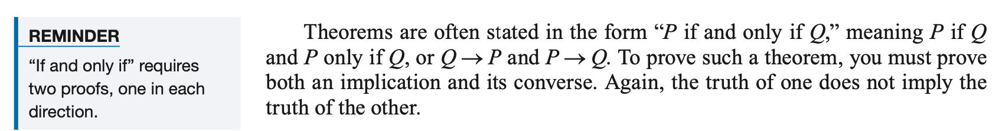
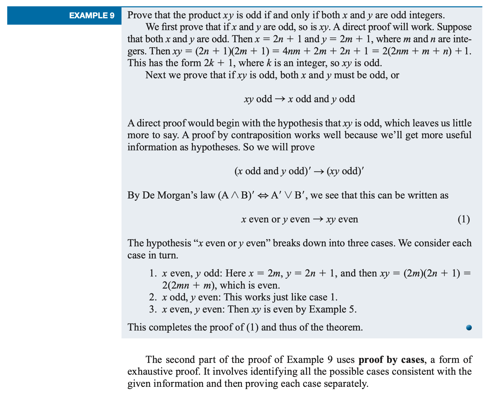

Chapter 2: Proofs, Induction
Section 2.1 Proof Techniques
2.1 Proof Techniques
The formal argument of Chapter 1 have the form \(P → Q\), where \(P\) and \(Q\) may present compound statements. The point there was to prove that an argument is valid -- true in all interpretations by nature of its internal form or structures, not because of its content or the meaning of its component parts.However, we often want to prove arguments that are not universally true but just true within some context. Meaning becomes important because we are discussing a particular subject -- graph algorithms, or Boolean algebra, or compiler theory, or whatever and we want to prove that if \(P\) is true in this context, then so is \(Q\).
If we can do this, then \(P → Q\) becomes a theorem about that subject.
Proposition is a statement that can be either true or false.
Theorem is a proposition that has passed the mathematical verification process and it proved to be True.
To Prove or Disprove
If you are simply presented with a conjecture, it may be difficult to decide which of the two approaches you should try -- to prove the conjecture or to disprove it! A simple counterexample to a conjecture is sufficient to disprove it. Of course, merely hunting for a counterexample and being unsuccessful does not constitute a proof that the conjecture is true.Disprove
One counterexample is enough to disprove a conjecture.Example 1:
For a positive integer \( n \), \( n \) factorial is defined as \( n*(n-1)*(n-2)...1 \), and is denoted by \( n! \). Prove or disprove the conjecture: "For every positive integer \( n \), \( n! <= n^2 \)"
Let's begin by testing some cases:
| \(n\) | \(n!\) | \(n^2\) | \(n! <= n^2\) |
|---|---|---|---|
| 1 | 1 | 1 | yes |
| 2 | 2 | 4 | yes |
| 3 | 6 | 9 | yes |
So far, this conjecture seems to be looking good. But for the next case,
| \(n\) | \(n!\) | \(n^2\) | \(n! <= n^2\) |
|---|---|---|---|
| 4 | 24 | 16 | no |
We have found a counterexample. The fact that the conjecture is true for n = 1,2, and 3 does nothing to prove the conjecture, but the singe case n = 4 is enough to disprove it.If a counterexample is not forthcoming, perhaps the conjecture is true and we should try to prove it. What techniques can we use to try to do this? For the rest of this section, we'll examine various methods of attacking a proof.
Exhaustive Proof
While "disproof by counterexample" always works, "proof by example" seldom does. The one exception to this situation occurs when the conjecture is an assertion about a finite collection. In this case, the conjecture can be proved true by showing that it is true for each member of the collection. Proof by exhaustion means that all possible cases have been exhausted, although it often means that the person doing the proof is exhausted as well!Example 2:
Prove the conjecture, "If an integer between 1 and 20 is divisible by 6, then it is
also divisible by 3" ("Divisible by 6" means, "evenly divisible by 6," that is,
the number is an integral multiple of 6.)
Because there is only a finite number of cases, the conjecture can be proved by
simply showing it to be true for all the integers between 1 and 20. Table 2 is the proof.
| Table 2 | ||
|---|---|---|
| Number | Divisible by 6 | Divisible by 3 |
| 1 | no | |
| 2 | no | |
| 3 | no | |
| 4 | no | |
| 5 | no | |
| 6 | yes: 6 = 1 \(\times\) 6 | yes: 6 = 2 \(\times\) 3 |
| 7 | no | |
| 8 | no | |
| 9 | no | |
| 10 | no | |
| 11 | no | |
| 12 | yes: 12 = 2 \(\times\) 6 | yes: 12 = 4 \(\times\) 3 |
| 13 | no | |
| 14 | no | |
| 15 | no | |
| 16 | no | |
| 17 | no | |
| 18 | yes: 18 = 3 \(\times\) 6 | yes: 18 = 6 \(\times\) 3 |
| 19 | no | |
| 20 | no | |
Direct Proof
In general (where exhaustive proof won't work), how can you prove that \(P → Q\) is true? The obvious approach is the direct proof --assume the hypothesis \(P\) and deduce the conclusion \(Q\). The following example shows an informal proof that if two numbers are even (that's the hypothesis \(P\)), then their product is even (that's the conclusion \(Q\)). Recall that an even number is a number that is an integral multiple of 2, for example, 18 is even because 18 = 2*9. An odd number is 1 more than an integral multiple of 2, for example, 19 = 2*9 +1.A direct proof is a method of mathematical reasoning where you demonstrate the truth of a proposition by a straightforward chain of logical deductions from known facts, definitions, or previously established theorems. In direct proof, you assume the hypothesis or premises are true and use logical steps to arrive at the conclusion.
Example 3:
Consider the conjecture
x is an even integer and y is an even integer -> the product x*y is an even integer.
Rewrite as P->Q: Prove that if x and y are even, then x*y is even.
The proof sequence might look like the following:
1. x is even (hypothesis)
2. y is even (hypothesis)
3. x = 2m (definition of even)
4. y = 2n (definition of even)
5. x*y = (2m)*(2n) (substitution)
6. x*y = 2*(m*2*n) (algebra)
7. x*y is even (definition of even)
Hint:
The definition of an even integer is any integer that is divisible by 2 without leaving a remainder.
An odd integer is any integer that is not divisible by 2.
Proof by Contraposition
If you have tried diligently but failed to produce a direct proof of your conjecture \(P → Q\), and you still feel that the conjecture is true, you might try some variants on the direct proof technique. If you can prove the theorem \(Q' → P'\), you can conclude \(P → Q\) by making use of the tautology \( (Q' → P') → (P → Q) \). \(Q' → P'\) is the contrapositive of \(P → Q\), and the technique of proving \(P → Q\) by doing a direct proof of \(Q' → P'\) is called proof by contraposition .Example 4:
Prove that if the square of an integer is odd, then the integer must be odd. Rewrite the conjecture as P->Q: If n^2 is odd, then n is odd.
| P: \( n^2 \) is odd | Q: n is odd |
|---|---|
| P': \( n^2 \) is even | Q': n is even |
Write the Contrapositive Q'->P': If an integer is even, then the square of the integer is even. Rewrite the contrapositive: If x is even, then x^2 is even. Direct proof of the contrapositive: 1. x is even (hypothesis) 2. x = 2*m (definition of even) 3. x^2 = 2m*2m (substitution) 4. x^2 = 2*(m*2*m) (algebra: associative property of multiplication) 5. x^2 is even (definition of even)Conclusion:
Since we have proven the contrapositive statement, the original statement is also true by logic. Therefore, if the square of an integer is odd, the integer itself must be odd.
| More Inference Rules | ||
|---|---|---|
| From | Can Derive | Name/Abbreviation for Rule |
| P → Q | Q' → P' | Contraposition-cont |
| Q' → P' | P → Q | Contraposition-cont |
Proof by Contradiction
In addition to direct proof and proof by contraposition, you might use the technique of proof by contradiction . (Proof by contradiction is sometimes called indirect proof, but this term more properly means any argument that is not a direct proof.)Suppose you are trying to prove \(P → Q\). By constructing a truth table, we see that
| P | Q | Q' | \( P ∧ Q' \) | \(P ∧ Q' → 0 \) | \(P → Q \) | \( (P ∧ Q' → 0) → (P → Q) \) |
|---|---|---|---|---|---|---|
| T | T | F | F | T | T | T |
| T | F | T | T | F | F | T |
| F | T | F | F | T | T | T |
| F | F | T | F | T | T | T |
Therefore, in a proof by contradiction, you assume that both the hypothesis and the negation of the conclusion are true and then try to deduce some contradiction from these assumptions.
It is hard to prove that something is not true; it's much easier to assume it is true and obtain a contradiction.
Example 5:
Let's use proof by contradiction on the statement: "If a number added to itself gives itself,
then the number is 0."
| P: x + x = x | Q: x = 0 |
|---|---|
| Q': x != 0 |
Reminder: To prove a statement is true, you can try proof by contradiction — assume it’s false and look for a contradiction.
Proof Techniques Review
Table 2.2 summarizes useful proof techniques we have discussed so far.| Table 2.2 | ||
|---|---|---|
| Proof Technique | Approach to Prove P → Q | Remarks |
| Exhaustive proof | Demonstrate P → Q for all possible cases | May be used only to prove a finite number of cases |
| Direct proof | Assume P, deduce Q | The standard approach -- usually the thing to try. |
| Proof by contraposition | Assume Q', deduce P' | Use this if Q' as a hypothesis seems to give more ammunition than P would. |
| Proof by contradiction | Assume P ∧ Q', deduce a contradiction | Use this when Q says something is not true. |
Practice
1. Provide counterexamples to the following conjectures:a. All animals living in the ocean are fish. b. Every integer less than 10 is bigger than 5.2. Please give an exhaustive proof of the following conjecture:
For any positive integer n less than or equal to 3, \(n! < 2^n\).
3. Please give a direct proof of the following conjecture:
The sum of two odd integers is even.4. Please give a contraposition proof of the following conjecture:
If a number x is positive, so is x + 1.Hint:
x is positive: \( x > 0 \)
x is not positive: \( x <= 0 \)
5. Please give a contradiction proof of the following conjecture:
The value A is the average of the n numbers x1, x2, ... , xn. Prove that at least one of x1, x2, ... , xn is greater than or equal to A.6. Prove that the product xy is odd if and only if both x and y are odd integers.
Hint:
step 1: Prove \( P → Q \)
step 2: Prove \( Q → P \)

